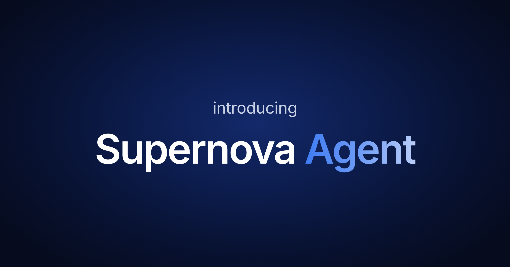
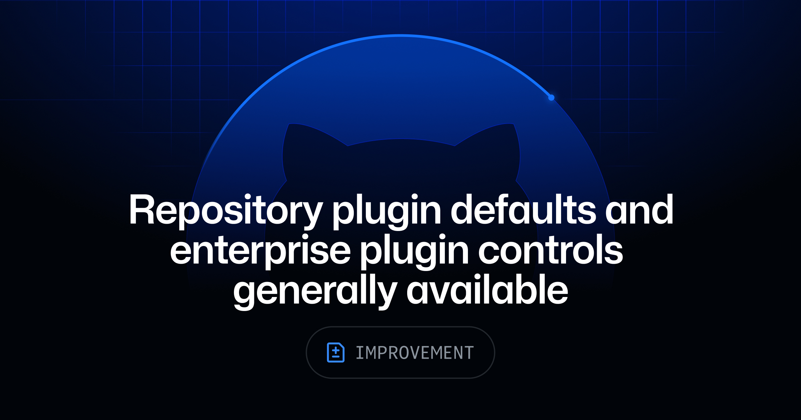
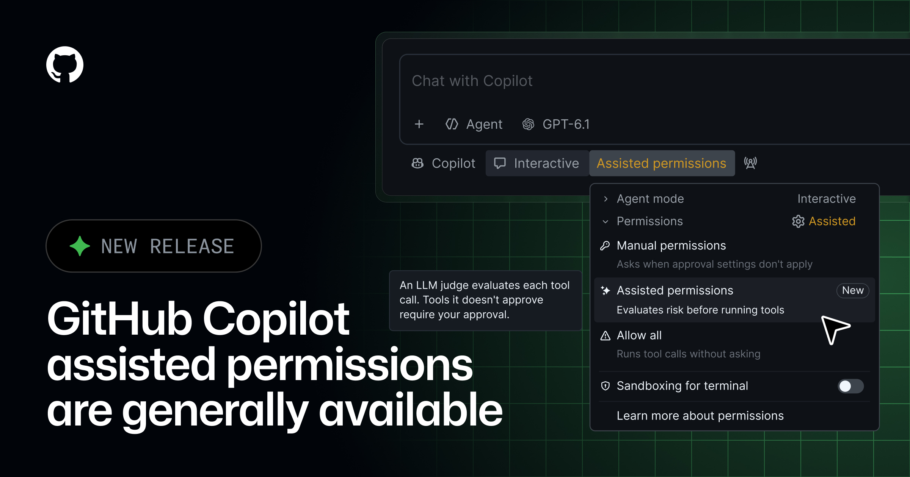
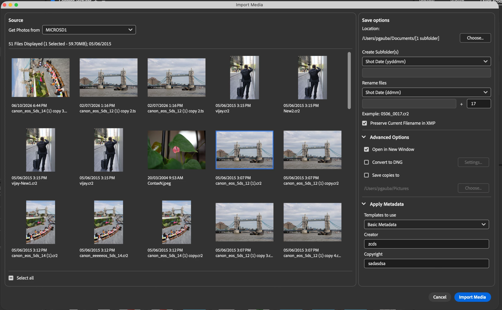

周日的新东西不算多，线索倒很集中：agent 开始有自己的身份、默认插件、审批模式和账单了。Supernova 把它放进设计系统，GitHub 则一口气补权限、组织身份和企业策略。以后评估 agent，别只问它会不会干活，还得问清楚它以谁的名义干、默认带了什么、谁点头、钱算谁的。
另一头，Crown Royal 那支片子把 500 多件 CG 道具做完，又把成片转到 8mm、16mm、35mm 和 VHS 上。工具越来越聪明，画面却要主动留下磨损、颗粒和年代误差。技术负责把东西做对，人的工作还是决定哪里不该太干净。

Supernova 把 agent 直接放进设计系统：补组件文档、清 token、连 Figma、跑导出管线都能在聊天里交代。它看到的是当前页面和真实的结构化数据，不是一份复制品；公开测试面向所有套餐，Contributor 以上角色可用，每发一条消息扣 50 个 workspace credits。
边界也写得很具体。发布和删除必须确认，删除前会列清单，文档能从 Page history 恢复；但目前没有一键 undo，只能让 agent 反向改一次，再自己检查。还没实测，先不替它背书。不过“先 audit，再 change”这条纪律可以直接拿走——让它先列出没描述的 token，读完清单，再决定删不删。设计系统最怕的从来不是慢，是一口气改完却说不清改了什么。

GitHub Copilot 的仓库默认插件和企业管控已经 GA，覆盖 VS Code、Copilot CLI 和 Copilot app。仓库可以替贡献者预装一组插件；企业可以限定 marketplace、强制安装或直接封禁。企业设置优先级最高，被要求的插件用户关不掉。
这是典型的“便利功能开始长出治理成本”。默认插件当然省配置，但也会悄悄扩大 agent 能碰的范围。仓库里最好把默认清单、owner 和变更记录一起提交，别只留一个看不出来源的 enabled 状态。插件一旦代表组织行事，就已经不是个人偏好。

Assisted permissions 也转为 GA。Copilot 要跑命令、读路径或打开 URL 时，会先由模型判断：明显安全的直接放行，其余继续找人确认。企业管理员还能禁掉 Allow All、单独关掉 Assisted，或者给新会话指定默认模式。
比“每一步都弹窗”和“全都放行”都顺手，但别把模型判断误读成安全审计。真正危险的操作往往要结合仓库、环境和当前目标才看得出来。先在只读仓库里跑一周，记录它自动放过了什么、拦住了什么；误判样本比宣传页更值钱。
GitHub Copilot SDK 现在支持 GitHub App 的 server-to-server 身份，处于 public preview。后台服务不必再借某个员工的登录态：给 App 一项只读的 Copilot Requests 组织权限，配短期 installation token 就能调用；用量和账单归安装它的组织，预算、模型策略也跟着组织走。管理员可在 AI usage CSV 里用 app_client_id 查账，停用方式是暂停或卸载 App。
这条不显眼，却比多一个模型更接近生产。一个夜里跑的 agent 不该挂在“某位同事永不过期的 token”上。身份、费用和撤销入口终于对齐了，接下来该补的是任务级日志：它以哪个 App 身份，为哪次工单，花了多少，改了什么。
Acrobat 现在能把文档、PDF Space 或聊天摘要变成最多三版单页设计，类型包括 flyer、社交帖、newsletter 和邀请函。可以继续聊天改内容，再下载图片、送进 Adobe Express 深改，或存回 PDF Space。Individual 与 Teams 的 Acrobat Studio、AI Assistant Plus 或 Acrobat Express 用户可用；目前受 fair-use 限制，Adobe 也明确保留未来改成 generative credits 的权利。
它适合把“已有内容”压成传播物，不适合替你决定哪句话该留下。官方自己也提醒姓名、日期和数字要复核，而且当前一次聊天只处理一个改动。还没实测；真要试，就拿一份带表格和脚注的周报，不要拿三段顺滑文案喂它。长文变海报，最容易丢的正是那些不能丢的小字。

Bridge Beta 17 把 Import Media 正式做进应用：从存储卡或设备导入，按子文件夹整理，批量改名、转 DNG、套 metadata template，也补了 CF Express。原因很现实——Apple 正在收掉 Rosetta 2，旧的 Adobe Photo Downloader 到 macOS 28 预计就不能工作了。
这不是漂亮的新功能，是一条生产管线的替换。摄影和视频团队现在就该拿一张真实卡做回归：文件名、EXIF、DNG、重复导入、目标盘断连，全走一遍。等 macOS 真升级才发现 ingest 不对，损失的不是几分钟，是原片。
Vercel 更新了 IP geolocation 数据：几乎所有请求都能拿到城市级结果，约 90% 能拿到邮编，而且刷新更频繁。无需改代码；现有 headers 和 @vercel/functions 里的 geolocation() 会直接收到新结果。
“不用改代码”不等于“行为不会变”。VPN、托管机房和租赁 IP 可能被判到新的城市，甚至新的国家。拿它做本地化可以更准，拿它做访问控制就要重新测。至少把关键地区、VPN 和公司出口 IP 跑一遍；地理数据升级，本质上也是一次规则变更。
视频：Vimeo 原片https://vimeo.com/1240780910｜来源：Stash 文章https://www.stashmedia.tv/henry-scholfield-saga-track-crown-royal-through-time/
Henry Scholfield 和 Toronto 工作室 SAGA 没把这支 Crown Royal 片子拍成九组产品静物，而是重建了九十年里的完整室内：建筑、家具、灯光、材质都跟着年代走。瓶身、瓶盖、标签和那只紫色绒袋也按历史细节重做。全片用了 500 多件定制道具，每一件还要补磨损和使用痕迹。
镜头很克制。机位像被钉在柜子前，时间靠陈设、墙纸、色温和瓶子细节往前推；物件在连续替换，空间骨架却没乱。于是观众先读到“这个家还在”，再发现品牌也一直在。它没有拿一堆飞行转场提醒你看 CG，这就是成熟。
更狠的是最后一步：做完的 CG 又转到 8mm、16mm、35mm 和 VHS 上，把颗粒、偏色和不稳定重新带回来。做产品 hero video 可以照着试一个小样——先锁死构图，只让界面内容、材质和光线跨三个阶段变化；最后再加有限的模拟噪声。别一开始就堆故障特效，年代感得从物件逻辑里长出来。
Stash 11 月 1 日只新增了 Crown Royal，已升级为今天主卡。其余三条都是近期已覆盖内容，这里只留索引，不换一套形容词重发。
app_client_id 能查到 App，还查不到它为什么行动。1240780910。核验说明：Supernova、GitHub、Adobe、Vercel、Stash 与 Vimeo 官方页面于 2026-11-02 回读。正文 7 张配图原始宽度为 1440–2400px，并逐张目视检查；Adobe Bridge 的 212px OG 图已弃用，改取 2160px 官方界面图。Vimeo player 1240780910 的 GET 预检返回 401，飞书按规则使用 1920px Stash 制作视觉降级，同时保留 Stash 与 Vimeo 原片链接。